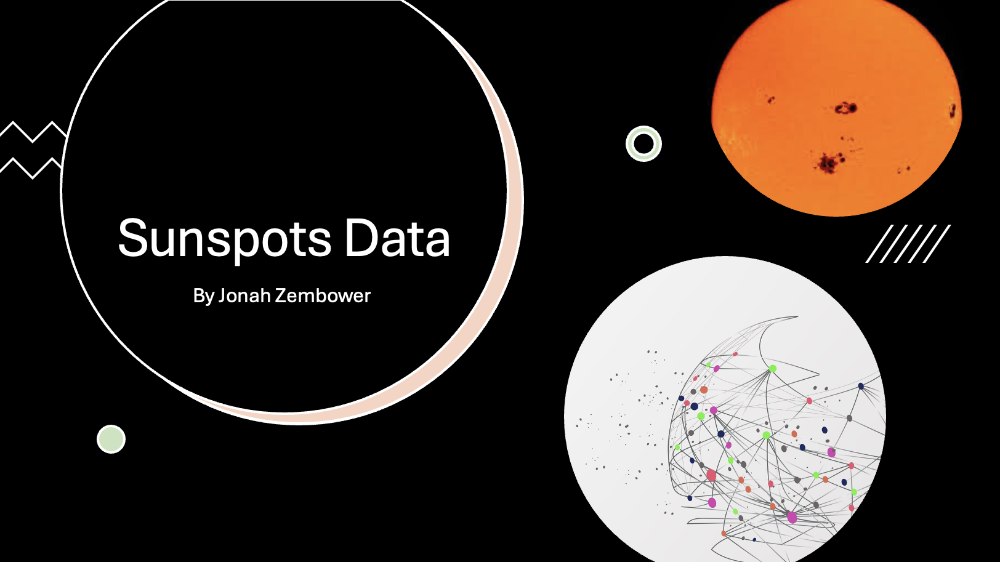
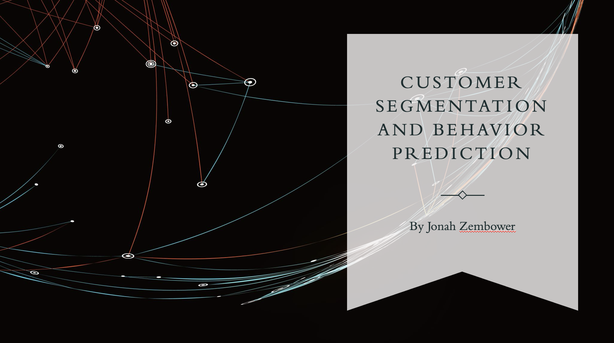
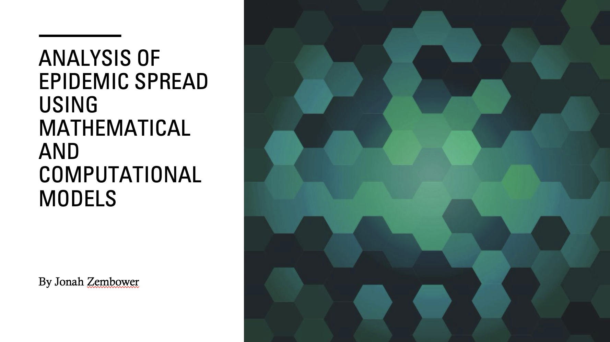

Jonah Zembower
Home
About
Experience
Projects
Data Science
Exercise Science
Contact
Browse My Recent
Projects

Time Series Analysis
GitHub

Customer Segmentation/Image Analysis
GitHub

Disease Prevention Analysis
GitHub
Read My Blog
Information for Life
Latest Blog Posts
Rat Race of Life
The Foundational Truth of Following Jesus
Job's Friends
Visit My Substack